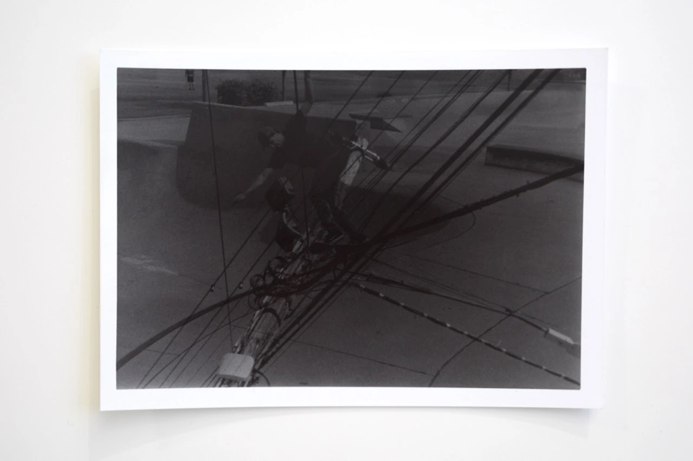

Photography series
Deliberate Practice
 Cover unavailable. Open the project to continue.
Cover unavailable. Open the project to continue.Assignment #1: Light, contrast, mood — back to contents


Assignment #2: Symmetric and asymmetric visual thinking — back to contents
 Image unavailable. Open the original photograph.
Image unavailable. Open the original photograph.
Image unavailable. Open the original photograph. Image unavailable. Open the original photograph.
Image unavailable. Open the original photograph.